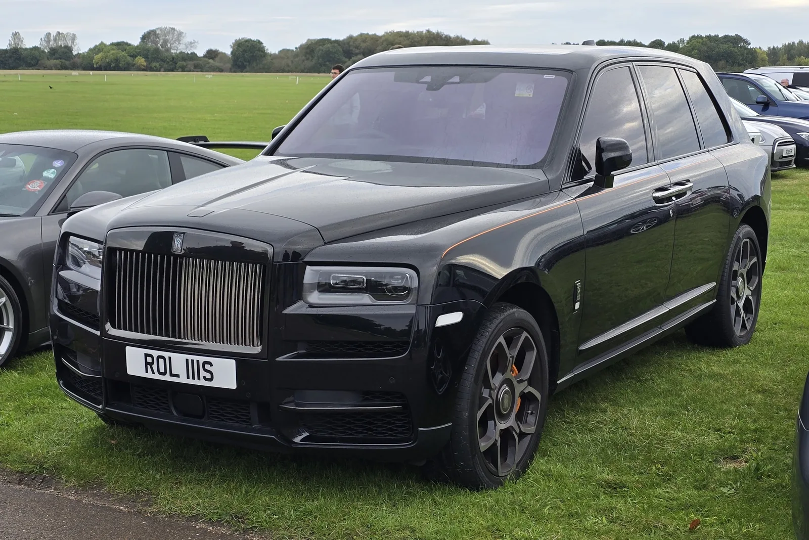
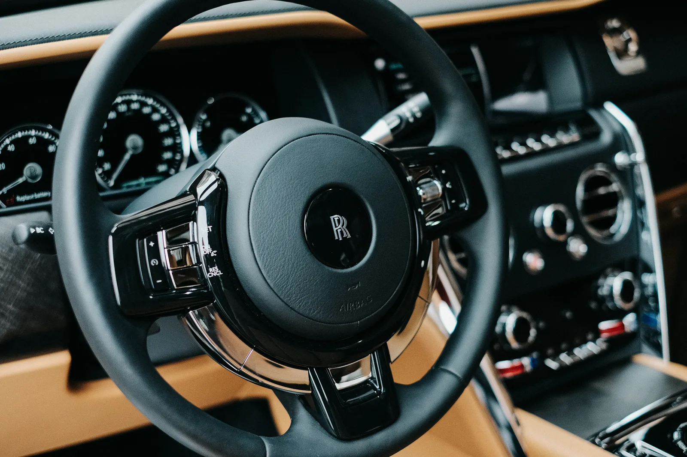
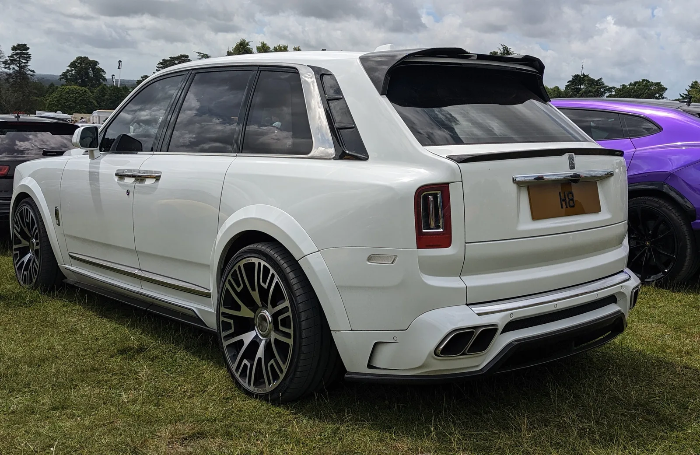

▲ 경매에 출품됐다가 유찰된 롤스로이스 컬리난 시리즈 II. 어반 오토모티브의 카본 파이버 와이드바디 키트가 장착됐다
2026년형 롤스로이스 컬리난 시리즈 II 와이드바디 한 대가 클래식카 경매 플랫폼 '브링 어 트레일러(Bring a Trailer)'에 출품됐다가 유찰됐습니다. 주행거리 단 240마일에 불과한 이 차량은 딜러 위탁으로 경매에 올라왔으며, 응찰가는 55만5,551달러(약 7억5,000만 원)까지 올라갔지만 판매자가 정한 최저 낙찰가(리저브)에 미치지 못해 결국 새 주인을 찾지 못했습니다.
1. 6.75리터 V12, 그리고 화려한 튜닝
이 차의 베이스가 되는 롤스로이스 컬리난은 6.75리터 트윈터보 V12 엔진으로 563마력, 627lb-ft의 토크를 냅니다. 신차 가격은 44만1,550달러(약 5억9,600만 원)였는데, 여기에 원 소유주가 어반 오토모티브의 카본 파이버 와이드바디 키트와 30mm 휠 스페이서, 24인치 단조 알로이 휠까지 더했습니다. 실내는 밝은 오렌지 가죽으로 시트와 도어 패널, 대시보드까지 통일감 있게 마감했습니다. 튜닝에만 들어간 비용이 16만2,900달러(약 2억2,000만 원)로, 신차 가격의 3분의 1을 훌쩍 넘습니다.

▲ 순정 사양 롤스로이스 컬리난 블랙 배지. 튜닝 전 신차 가격은 44만1,550달러(약 5억9,600만 원)였다
2. 왜 60만 달러 투입하고도 안 팔렸나
신차값과 튜닝 비용을 합치면 이 차에 투입된 총 비용은 약 60만5,000달러(약 8억1,700만 원)에 달합니다. 하지만 최종 응찰가는 55만5,551달러(약 7억5,000만 원)에 그쳤습니다. 업계에서는 과감한 외형 개조와 밝은 오렌지 가죽 인테리어가 오히려 잠재 구매자들을 주저하게 만들었을 것으로 추측하고 있습니다. 롤스로이스라는 브랜드 자체가 절제되고 클래식한 이미지를 중시하는 소비자층이 두꺼운 만큼, 지나치게 개성이 강한 커스터마이징은 대중적인 재판매 수요를 오히려 좁히는 역효과를 낼 수 있습니다.
| 항목 | 금액 |
|---|---|
| 신차 가격 | $441,550 (약 5억9,600만 원) |
| 어반 오토모티브 와이드바디 튜닝 | $162,900 (약 2억2,000만 원) |
| 총 투입 비용 | 약 $605,000 (약 8억1,700만 원) |
| 경매 최종 응찰가 | $555,551 (약 7억5,000만 원) |
| 결과 | 유찰(리저브 미달) |

▲ 롤스로이스 컬리난 실내. 유찰된 차량은 밝은 오렌지 가죽으로 시트·도어 패널·대시보드까지 통일감 있게 커스터마이징됐다
3. 럭셔리카 튜닝 시장의 딜레마
이번 사례는 초고가 럭셔리카 튜닝 시장이 안고 있는 근본적인 딜레마를 보여줍니다. 튜닝은 개성을 표현하는 좋은 수단이지만, 동시에 잠재 구매층을 스스로 좁히는 양날의 검이기도 합니다. 참고로 비슷한 사례로 만소리(Mansory) 같은 튜닝 브랜드도 컬리난 기반의 와이드바디 커스텀을 선보인 바 있는데, 이런 프로젝트들 역시 화려한 외관과는 별개로 중고 시장에서의 가치 평가는 순정 모델보다 오히려 까다로운 경우가 많습니다. 결국 "얼마를 투자했는가"와 "시장이 그 가치를 인정하는가"는 완전히 다른 문제라는 것을 보여주는 사례입니다.

▲ 만소리(Mansory)가 제작한 또 다른 컬리난 와이드바디 커스텀. 이런 극단적 튜닝 차량들은 중고 시장에서 순정 모델보다 오히려 가치 평가가 까다로운 경우가 많다
4. 정리 — 다음 경매를 기다려야 하는 이유
유찰됐다고 해서 이 차가 영영 팔리지 않는다는 뜻은 아닙니다. 판매자는 리저브 가격을 낮춰 재출품하거나, 개인 협상을 통해 별도로 판매를 시도할 수 있습니다. 다만 이번 결과는 초고가 튜닝카 시장에서 "투입 비용"과 "시장가치"가 반드시 비례하지 않는다는 냉정한 현실을 다시 한번 보여줬습니다. 아무리 희귀하고 화려한 튜닝이라도, 결국 사려는 사람이 그 가치에 동의해야만 거래가 성사된다는 단순한 원칙은 럭셔리카 시장에서도 예외가 아닙니다.